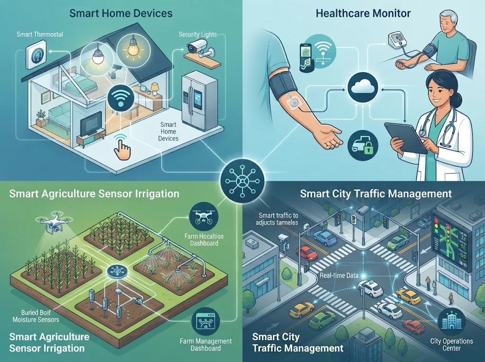
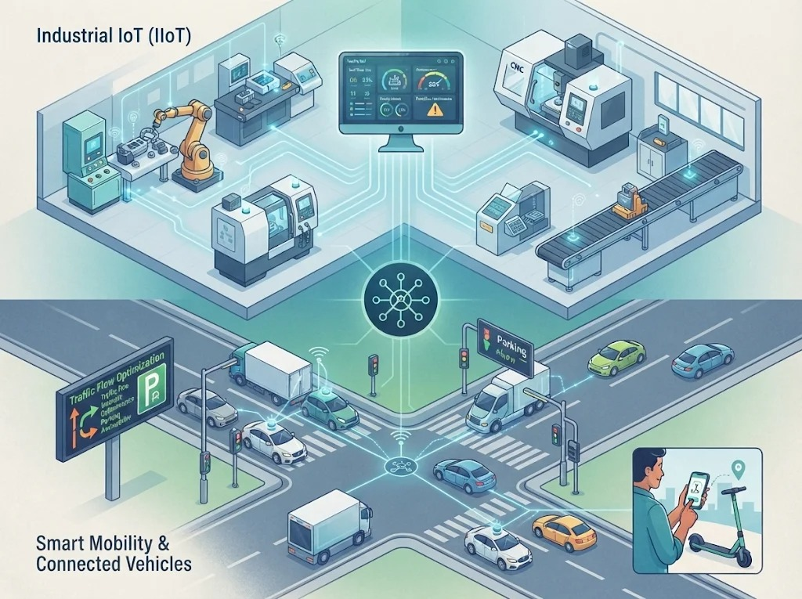
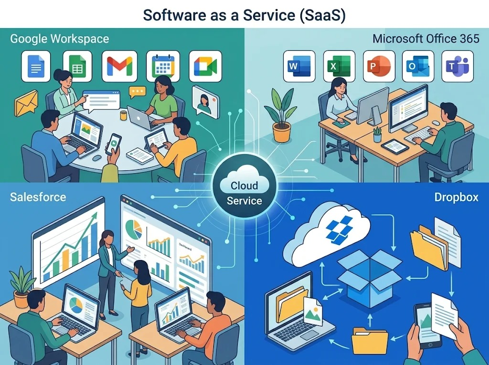
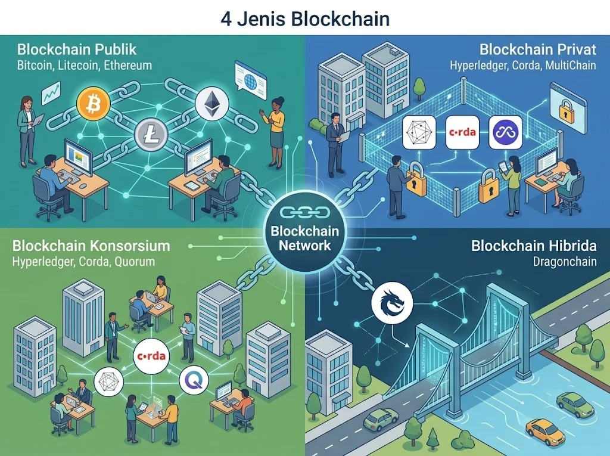
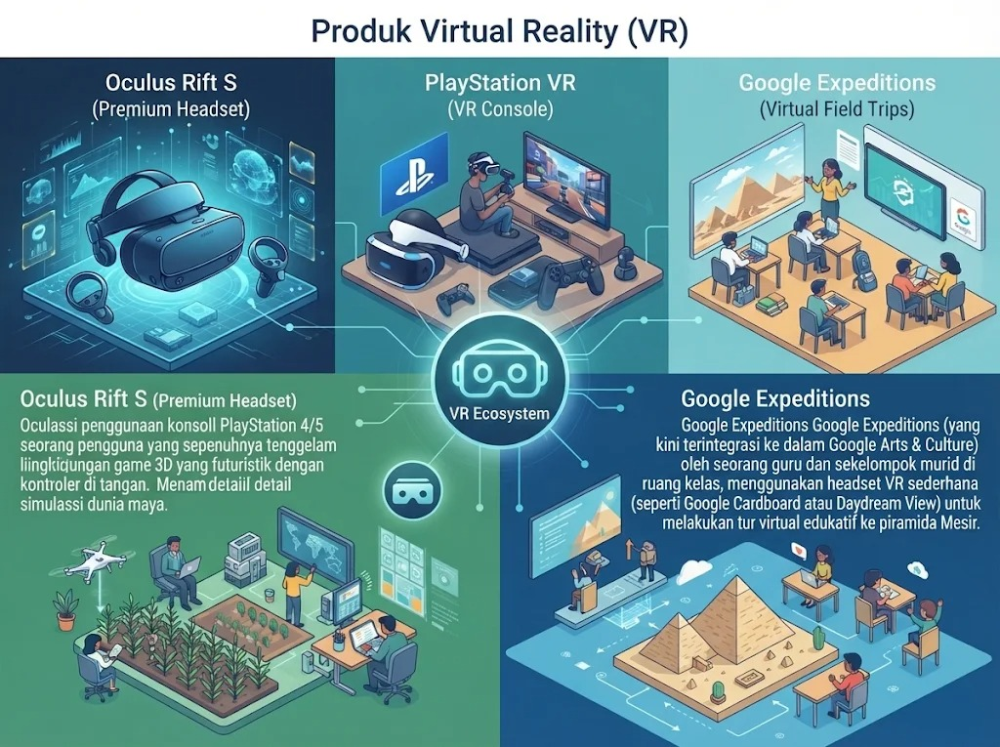
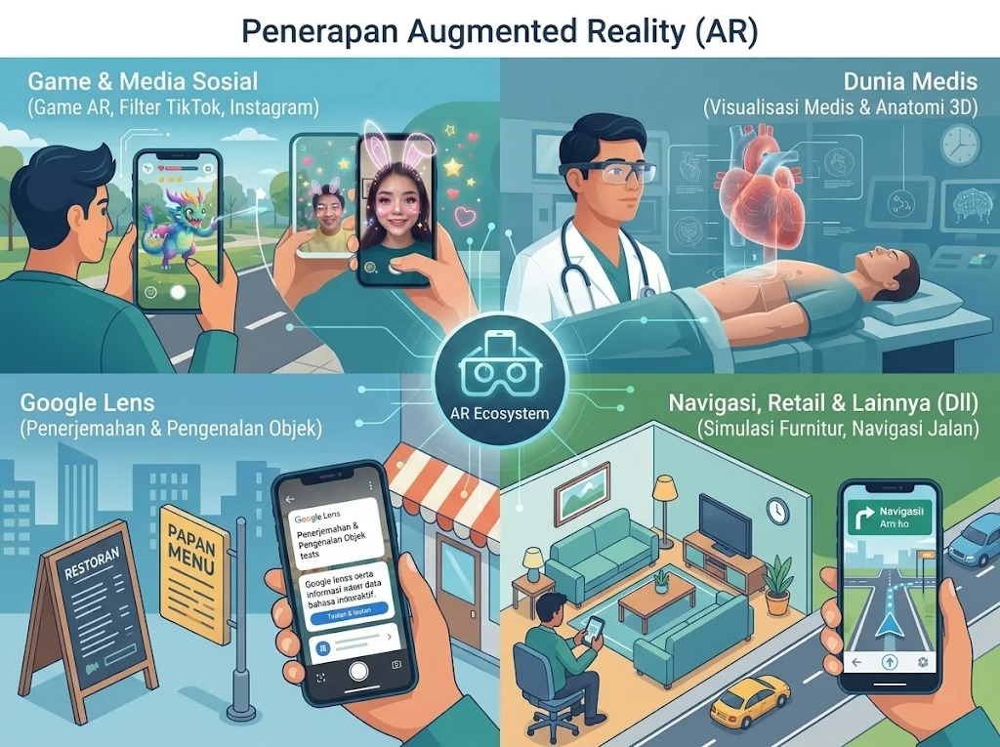

1. Rumah Pintar (Smart Home)
Menggunakan perangkat seperti lampu pintar, kamera keamanan, dan termostat yang dapat dikontrol melalui aplikasi. Contoh: Google Nest, Amazon Echo (Alexa)[cite: 4].
Ringkasan konsep, contoh penerapan di dunia nyata, dan perbandingan kekuatan AR vs VR.
Dalam beberapa tahun terakhir, sejumlah teknologi canggih telah muncul ke permukaan. Salah satu yang paling populer di antara mereka adalah Internet of Things (IoT), yang telah memperbaiki cara hidup di seluruh dunia. IoT berfungsi untuk menghubungkan jaringan informasi dengan objek fisik dan lokasi nyata, yang dikenal sebagai ‘hal-hal’, untuk memenuhi kebutuhan di masa mendatang[cite: 4].
IoT adalah jaringan sensor, aktuator, Radio Frequency IDentifications (RFID), perangkat lunak, penyimpanan, dan tautan untuk mengumpulkan data dan menganalisisnya untuk memantau dan mengendalikan lingkungan yang ditargetkan. Selain itu, ia memanfaatkan kuantum dan nanoteknologi untuk mencapai peningkatan besar dalam kecepatan pemrosesan, penginderaan, dan kapasitas penyimpanan ke perangkat[cite: 4].
Menggunakan perangkat seperti lampu pintar, kamera keamanan, dan termostat yang dapat dikontrol melalui aplikasi. Contoh: Google Nest, Amazon Echo (Alexa)[cite: 4].
Perangkat medis yang memantau kondisi pasien dan mengirimkan data ke dokter secara real-time. Contoh: Fitbit, monitor tekanan darah pintar[cite: 4].
Penggunaan sensor pabrik untuk memantau mesin dan proses produksi. Contoh: Sistem predictive maintenance[cite: 4].
Kendaraan yang terhubung dengan GPS, sensor jalan, dan aplikasi navigasi. Contoh: Mobil otonom seperti Tesla[cite: 4].
Penggunaan sensor untuk memantau kelembapan tanah, suhu, dan kebutuhan tanaman. Contoh: Sistem irigasi otomatis berbasis IoT[cite: 4].
Penerapan IoT untuk pengelolaan lalu lintas, pencahayaan jalan, dan pengumpulan sampah. Contoh: Sistem parkir cerdas dan lampu lalu lintas pintar[cite: 4].


SaaS merupakan layanan berbasis cloud yang memungkinkan pelanggan untuk mengakses perangkat lunak (software) yang disediakan oleh cloud provider. Dalam layanan ini, siapa saja dapat memanfaatkan tanpa perlu membangun server atau infrastruktur baru. SaaS memanfaatkan jaringan komputer untuk menyediakan layanan. Perangkat lunak disimpan di pusat data dan dikelola oleh penyedia SaaS. Pengguna hanya memerlukan koneksi jaringan dengan penyedia SaaS untuk menikmati layanan yang dapat diakses melalui Internet atau jaringan nirkabel[cite: 4].
Aplikasi Software-as-a-service (SaaS) telah mengalami pertumbuhan luar biasa selama sepuluh tahun terakhir, yang menghapus rintangan dalam menjangkau pengguna serta memungkinkan interaksi dan intelijen secara langsung. Melalui pemanfaatan analisis bisnis, aplikasi SaaS semakin terintegrasi dalam aktivitas bisnis dan kehidupan sehari-hari konsumen dengan meningkatkan persaingan dan menawarkan harga yang kreatif[cite: 4].

Blockchain merupakan inovasi dalam pencatatan digital yang tersebar, menyimpan transaksi secara permanen dan jelas di berbagai node. Dengan ini, transaksi bisa dipastikan dengan akurat tanpa memerlukan pihak berwenang sentral[cite: 4].
Teknologi Blockchain, yang dianggap sebagai inovasi terbaru dan dilihat sebagai katalis utama untuk perubahan global, dimanfaatkan oleh institusi keuangan untuk meningkatkan inisiatif digitalisasi mereka[cite: 4].
Bitcoin, Litecoin, Ethereum[cite: 4].
Hyperledger, Corda, MultiChain[cite: 4].
Hyperledger, Corda, Quorum[cite: 4].
Dragonchain[cite: 4].

Saat ini, VR menawarkan potensi yang besar karena sudah berhasil mengatasi tantangan teknis yang sebelumnya menghalangi penerimaan dan pengakuan luas di kalangan peneliti dan pengguna[cite: 4].
Teknologi VR dapat dibedakan menjadi tiga jenis utama, yaitu pengalaman yang sepenuhnya immersif, semi-immersif, dan non-immersif. Sistem VR yang sepenuhnya immersif menampilkan gambar visual melalui headset VR, alat yang dipakai di kepala (HMD), perangkat kontrol, sensor gerakan, atau proyeksi besar, sehingga pengguna merasa bahwa mereka seakan-akan telah dipindahkan ke dalam dunia virtual. Sistem semi-immersif memanfaatkan grafis tiga dimensi dengan komputer berperforma tinggi yang terhubung ke layar besar, sedangkan sistem VR yang non-immersif mengandalkan layar, keyboard, dan mouse[cite: 4].

AR dijelaskan sebagai representasi dari lingkungan fisik yang nyata, baik secara langsung maupun tidak langsung, yang telah ditingkatkan dengan informasi virtual yang dihasilkan oleh komputer. AR dikenal sebagai jenis antarmuka interaktif yang inovatif, mengubah layar tradisional pada perangkat seperti laptop, smartphone, dan tablet menjadi antarmuka yang lebih intuitif, memberi kesempatan untuk berinteraksi dengan dunia maya yang terasa sangat alami[cite: 4].
Meskipun teknologi AR memiliki banyak keuntungan, ada tantangan signifikan yang perlu dipecahkan termasuk kendala teknologi, pembatasan hukum, dan masalah etika[cite: 4].

| Aspek Kekuatan | Keunggulan AR (Augmented Reality) | Perbandingan / Catatan terhadap VR |
|---|---|---|
| Pandangan & Persepsi Dunia Nyata | Menampilkan elemen digital langsung di atas dunia nyata melalui lensa tembus pandang (see-through), sehingga pengguna melihat objek asli secara jelas dan alami[cite: 4]. | VR mengandalkan umpan balik kamera/sensor inframerah (passthrough) dengan tampilan beresolusi lebih rendah dan abu-abu (grayscale)[cite: 4]. |
| Kenyamanan Visual (Visual Comfort) | Dinilai lebih nyaman secara visual oleh partisipan karena tidak terisolasi dari lingkungan fisik sekitar[cite: 4]. | VR berpotensi memicu kelelahan visual atau motion sickness / cybersickness saat melihat tampilan kamera atau simulasi tertentu[cite: 4]. |
| Interaksi Gestur Alami & Tanpa Kontroler | Menggunakan gestur tangan alami (seperti tap, grab, dan pinch) tanpa perlu memegang kontroler khusus, sehingga terasa lebih menyatu dengan ruang fisik[cite: 4]. | VR mengandalkan handheld motion controllers dengan tombol/pemicu yang lebih presisi dan responsif, tetapi memerlukan adaptasi awal terhadap kontroler[cite: 4]. |
| Pemahaman Visual & Tugas Multi-Level | Membantu memvisualisasikan konsep kompleks dan tugas multi-level (misalnya anatomi gigi hingga 93% siswa merasa lebih paham, serta desain sirkuit logika)[cite: 4]. | VR sangat unggul untuk simulasi berisiko tinggi dan imersi penuh (seperti bedah ortopedi atau keselamatan konstruksi), sementara AR menonjol untuk visualisasi kontekstual dan tugas multi-level[cite: 4]. |
| Pembelajaran Mandiri & Aksesibilitas | Mendukung pembelajaran mandiri yang fleksibel dan dapat diterapkan pada konteks dengan keterbatasan sumber daya[cite: 4]. | VR sering menghadapi kendala biaya setup awal perangkat keras/lunak yang relatif tinggi[cite: 4]. |
Simak penjelasan visual mengenai perbandingan kekuatan dan inovasi teknologi AR dan VR[cite: 4]:
Kredit Video: “AR (Augmented Reality) vs VR (Virtual Reality)” — Penmabis Bisnis Digital Unpad 2020.
Jika pemutar tidak dapat dibuka langsung di halaman ini, buka di YouTube: Tonton di YouTube[cite: 5].